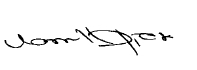

Financial reports
Annual Report of the Board of Directors on the Affairs of the Company


The Directors are pleased to present their report and the Audited Financial Statements of the Company, Sri Lanka Telecom PLC and the Group for the financial year 2018.
Formation
Sri Lanka Telecom (“SLT”) was formed by an Incorporation Order made under Section 2 of the State Industrial Corporations Act No. 49 of 1957 and published in the Extraordinary Gazette No. 596/11 of 6 February 1990. Subsequently, in terms of an Order made by the Minister of Posts and Telecommunications (“the Minister”) on 24 July 1991 under Section 23 of the Sri Lanka Telecommunications Act No. 25 of 1991 and published in the Gazette No. 675 of 9 August 1991 all properties, rights, and liabilities (other than those excluded by the agreement entered into between the Minister and SLT as per subsection 2 of Section 23 of the Sri Lanka Telecommunications Act) to which the Department of Telecommunications (“DoT”) was entitled or subject to immediately before the transfer date of 1 September 1991 were vested with SLT.
SLT was converted to a public limited company on 25 September 1996, under the Conversion of Public Corporations or Government Owned Business Undertakings into Public Limited Companies Act No. 23 of 1987, vide Extraordinary Gazette No. 942/7 dated 25 September 1996.
SLT was re-registered under the Companies Act No. 07 of 2007 as Sri Lanka Telecom PLC on 4 June 2007.
Principal group activities and review of the business
The Group provides a broad portfolio of telecommunication services across Sri Lanka, the main activity being domestic and international fixed and mobile telephone services. In addition, the range of services provided by the Group include, inter alia, internet services, IPTV, wireless broadband, data services, domestic and international leased circuits, frame relay, satellite uplink, and maritime transmission.
The Company’s interest in subsidiaries/joint ventures and their business activities are as follows:
| Name of the subsidiary/associate | Business activity |
| Mobitel (Private) Limited | Mobile telephone services |
| eChannelling PLC | Information infrastructure for the healthcare industry |
| Sri Lanka Telecom (Services) Limited | Total network solutions |
| SLT Digital Info Services (Private) Limited [formerly known as SLT Publications (Private) Limited] |
Directory information, event management and activation, and digital services |
| SLT Human Capital Solutions (Private) Limited | Human resource solutions |
| SLT VisionCom (Private) Limited | IPTV support services |
| Sky Network (Private) Limited | Wireless broadband operations |
| SLT Property Management (Private) Limited | Management of SLT’s real estate resources |
| SLT Campus (Private) Limited | Higher Education |
| Galle Submarine Cable Depot (Private) Limited | Repair and maintenance of submarine telecommunication cable systems to third parties. |
A detailed review of the Company’s activities, the development of its businesses, and an indication of likely future developments are given under Management Discussion and Analysis.
Board of Directors
In terms of Section 168 (1) (h) of the Companies Act No. 07 of 2007, the names of persons who held the office as Directors of the Company as at 31 December 2018 are given below:
| Name of Director | Position | Date of appointment | Date of re-election |
| Mr P G Kumarasinghe Sirisena | Chairman/INED | 23.01.2015 | 13.05.2015 |
| Mr Chan Chee Beng | NED | 05.06.2008 | 12.05.2016 |
| Mr Lawrence Paratz | INED | 26.05.2010 | 12.05.2016 |
| Ms Lai Choon Foong | NED | 09.05.2014 | 24.05.2017 |
| Ms Nilanthi Pieris | INED | 03.02.2015 | 09.05.2018 |
| Mr W K H Wegapitiya | INED | 02.12.2015 | 12.05.2016 |
| Mr A R Desapriya (Resigned w.e.f 19.06.2018) | NED | 30.10.2017 | 09.05.2018 |
| Mr Kanishka Senanayake | INED | 17.09.2018 | – |
NED – Non-Executive Director
INED – Independent Non–Executive Director
Brief profiles of the Directors are contained in the Board of Directors section of the Annual Report.
Appointment and re-election of Directors
In terms of the Articles of Association of the Company, the Directors are authorised to appoint any person to be a Director either to fill a casual vacancy or as an additional Director provided that the total number of Directors do not exceed the maximum number of Directors specified in the Articles of Association of the Company. The Directors appointed during the year will hold office only until the next Annual General Meeting (“AGM”) and will offer themselves for re-election by the shareholders.
In addition, one third of the Directors (or the number nearest to one third) retires by rotation at each AGM and offer themselves for reappointment by the shareholders.
Mr Kanishka Senanayake was appointed as a Independent Non–Executive Director on 17 September 2018 to fill the casual vacancy that arose from the resignation of Mr Rohan De Silva. In accordance with Article 97 of the Articles of Association of the Company Mr Senanayake offeres himself for reappointment.
Mr W K H Wegapitiya, who has been longest in office since their last election, retire by rotation in terms of Articles 91 and 92 of the Articles of Association of the Company and being eligible offer himself for re-election.
Board subcommittees
In terms of Section 186 of the Companies Act, the Articles of Association of the Company and the Listing Rules the following mandatory and voluntary subcommittees have been appointed by the Board to focus in detail on a particular issue.
- Audit Committee
- Remuneration and Nomination Committee
- Senior Tender Board
- Technology subcommittee
- Related Party Transactions Review Committee
Information relating to subcommittees is given under “Corporate Governance”.
Directors’ indemnities and insurance
The Company maintains Directors’ and officers’ liability insurance which gives appropriate cover against the legal liabilities that may arise against them under the provisions of the Companies Act.
Interest Register and Directors’ interest in contracts with the Company
An Interest Register is maintained by the Company as per the requirement of the Companies Act No. 07 of 2007. The Directors have made necessary declarations as provided in Section 192 (2) of the aforesaid Companies Act. The Interest Register is available for inspection by shareholders or their authorised representatives as required by Section 119 (1) (d) of the Companies Act No. 07 of 2007.
The Company carries out transactions in the ordinary course of business at commercial rates with entities in which a Director of the Company is the Chairman or Director of such entitles or holds substantial interest in such entitles.
The Directors have no direct or indirect interest in any contract or proposed contact with the Company for the year ended 31 December 2018.
The Directors have declared all material interest in contacts involving the Company and have refrained from voting on matters in which they have a material interest.
Related party transactions
Transactions if any that could be classified as Related Party Transactions in terms of LKAS 24 “Related Party Disclosures” are given in Note 33 to the Financial Statements.
The Company has complied with the Colombo Stock Exchange Listing Rule 9.3.2 and Code of Best Practice on Related Party Transactions under the Securities and Exchange Commission Directive issued under Section 13 (c) of the Securities and Exchange Commission Act.
The Related Party Transactions Review Committee (RPTRC) reviews transactions carried out between related entitles except those set out in Rule 9.5 of the Listing Rules. RPT–RC confirms that the recurrent related party transactions carried out during the year 2018 does not exceed 10% of the consolidated revenue of the Group as per the Audited Financial Statements.
Directors and Chief Executive Officer’s shareholding
The Directors did not hold shares in the Company or its subsidiaries during the financial year under review.
| No. of Shares | ||
| 1 January 2018 | 31 December 2018 | |
| Chief Executive Officer | 1,563 | 1,563 |
Remuneration and other benefits of Directors
The remuneration and other benefits received by the Directors are given in Note 7 to the Financial Statements as required by Section 168 (1) (f) of the Companies Act.
Stated capital
The stated capital of the Company as at 31 December 2018 was LKR 18,048,600,000 divided into 1,804,860,000 ordinary shares. There were no changes to the issued capital of the Company during the year under review.
Details of the Company’s stated capital are set out in Note 29 to the Financial Statements.
Substantial shareholding
The following shareholders held more than 5% of the issued shares as at 31 December 2018.
| Secretary to the Treasury (Government of Sri Lanka) |
49.50% |
| Global Telecommunications Holdings N.V. of Netherlands |
44.98% |
Voting rights
Ordinary shareholders are entitled to receive notice and to attend and speak at any General Meeting of the Company. A shareholder entitled to attend and vote at a General Meeting may appoint a proxy to attend and vote instead of him. A proxy need not be a shareholder of the Company.
Every shareholder present in person or by proxy (or being a corporation present by a duly authorised representative) shall have one vote on a show of hands and one vote for every share held by him on a poll.
Private placement
SLT is proposing the issue of a maximum of 89,766,198 new ordinary voting shares representing 4.74% of the issued share capital post private placement in order to comply with the rules on minimum public float issued by the Colombo Stock Exchange. The funds expected to be raised through the private placement will be utilised to restructure the debt portfolio of SLT.
Debentures
The Company on 26 April 2018 issued 50,250,000 ten-year senior, unsecured, redeemable debentures at a issue price of LKR 100. The debentures were listed in the Colombo Stock Exchange.
The primary purpose of the issue was to retire short term maturing and high interest paying debt. The balance funds were utilised to partly finance the required future capital expenditure.
Financial Statements
The Financial Statements of the Group and the Company have been prepared in accordance with Sri Lanka Accounting Standards (SLFRS/LKASs), laid down by the Institute of Chartered Accountants of Sri Lanka and comply with the requirements of the Companies Act No. 07 of 2007.
The significant accounting policies adopted by the Group and Company in preparing the Financial Statements are set out on Note 3 to the Financial Statements. These policies, and applicable estimation techniques, have been reviewed by the Directors who have confirmed them to be appropriate for the preparation of the consolidated Financial Statements for 2018.
The aforementioned Financial Statements for the year ended 31 December 2018 certified by the Group Chief Financial Officer and signed by two Directors are given in the section on Statement of Financial Position of this Report.
A statement by the Directors of their responsibilities for preparing the Financial Statements is included in the Statement of Directors’ Responsibilities while the Independent Auditors’ Report is set out in the chapter on Financial Reports of this Report.
Financial results and appropriations.
| 2018 | 2017 | |||
| Company LKR Mn. | Group LKR Mn. | Company LKR Mn. | Group LKR Mn. | |
| Revenue | 47,389 | 81,445 | 44,537 | 75,741 |
| Profit | 1,906 | 4,948 | 1,428 | 3,940 |
| Reserves | 58,140 | 73,624 | 59,220 | 71,309 |
Results of the Company and of the Group are given in the Income Statement.
The movement of the reserves are given in the Statement of Changes in Equity of the Annual Report.
Dividends
The Directors recommend the payment of a first and final dividend of Rupees one and six Cents per share (2017 – LKR 0.89 per share) for the financial year ended 31 December 2018 payable on 8 April 2019 to the shareholders registered as at 27 March 2019, subject to the approval of the shareholders.
As required by Section 56 (2) of the Companies Act No. 07 of 2007, the Directors have signed a certificate stating that in their opinion based on the information available the Company satisfies the Solvency Test immediately after the dividend distribution is made and have obtained a certificate from the Auditors in terms of Section 57 of the Companies Act.
Property, plant and equipment
The movements in property, plant and equipment during the year are set out in Note 14 to the Financial Statements. Current status of value of properties is disclosed in Note 14.
Auditors
Ernst & Young, (“E & Y”) Chartered Accountants served as the External Auditors of the Company during the year under review. The Audit fees payable and fees payable for non-audit services rendered are as follows:
| 2018 LKR Mn. | 2017 LKR Mn. | |
| Audit fees | 7 | 7 |
| Fees for non-audit services | 8 | 3 |
SLT Group Audit Committee having considered E & Y’s performance and their independence recommend to the shareholders the reappointment of E & Y as the Auditors of
the Company for the ensuing year.
Based on the written representation made by the Auditors the Directors are satisfied that the Auditors have had no interest or relationship with the Company or its subsidiaries other than that of External Auditors.
E & Y have expressed their willingness to continue in office. A resolution to reappoint them and to authorise the Directors to determine their remuneration will be proposed at the forthcoming Annual General Meeting.
Statutory payments and Compliance with laws and regulations
The Directors confirm that to the best of their knowledge all taxes, duties and levies payable by the Company and subsidiaries, all contributions, levies and taxes payable on behalf of and in respect of the employees of the Company and its subsidiaries and all other known statutory dues as were due and payable by the Company and its subsidiaries as at the reporting date have been paid or where relevant provided for in the Financial Statements.
The Company has also ensured that it complied with the applicable laws and regulations including the Listing Rules of the Colombo stock Exchange.
Environmental protection
After making adequate enquiries from Management, the Directors are satisfied that the Company and its subsidiaries operate in a manner that minimises the detrimental effects on the environment and provides products and services that have a beneficial effect on the customers and the communities within which the Group operates.
Donations
The Directors have approved donations amounting to LKR 2 Mn. for charitable purposes for the year 2018. (2017 – Nil).
Employment policies
The employment policies of SLT cover issues such as diversity, employee well-being, and equal opportunities. The Company takes its responsibility towards the physically disabled seriously and does not discriminate any employee or prospective employee based on physical disability. Employees who become disabled during their service at SLT will be retained in employment wherever possible and will be given rehabilitation and training.
The Group companies operate within a framework of human resource policies, practices, and regulations appropriate to their market sector. Policies and procedures for recruitment, training, career development and the Code of Ethics for employees promote equality of opportunity regardless of gender, sexual orientation, age, marital status, disability, race, religion or other beliefs and ethnic or national, origin. The aim is to encourage a culture in which all employees have the opportunity to develop fully according to their individual abilities and the needs of the Group.
The number of persons employed by SLT and Group is given in Note 7.
Sustainability reporting
SLT is conscious of the direct and indirect impact on the environment due to its business activities. The Group endeavours to minimise the adverse effects on the environment and to ensure sustainable continuity of our natural resources. The activities undertaken by the Group in recognition of its responsibility as a corporate citizen are disclosed more fully in the section on Social and Environmental Capital of this Report.
Post balance sheet events
Except for matters disclosed in Note 36 to the Financial Statements, there are no material events as at the date of the Auditors’ Report which require adjustments to or disclosure in the Financial Statements.
Going concern
The Directors have reviewed the Company’s business plans and is satisfied that the Company has adequate resources to continue its operations in the foreseeable future to justify adopting the going concern basis in preparing the Financial Statements.
Annual General Meeting (AGM)
The AGM will be held at 10.00am on Thursday, 28 March 2019 at the Lotus Room of the Bandaranaike Memorial International Conference Hall (BMICH), Bauddhaloka Mawatha, Colombo 07. Details of the Meeting and the resolutions to be proposed are set out in a separate Notice of Meeting which accompanies this Annual Report.
By order of the Board of
Sri Lanka Telecom PLC

P G Kumarasinghe Sirisena
Chairman

Nilanthi Pieris (Ms)
Director

Mahesh Athukorale
Company Secretary
21 February 2019
Colombo